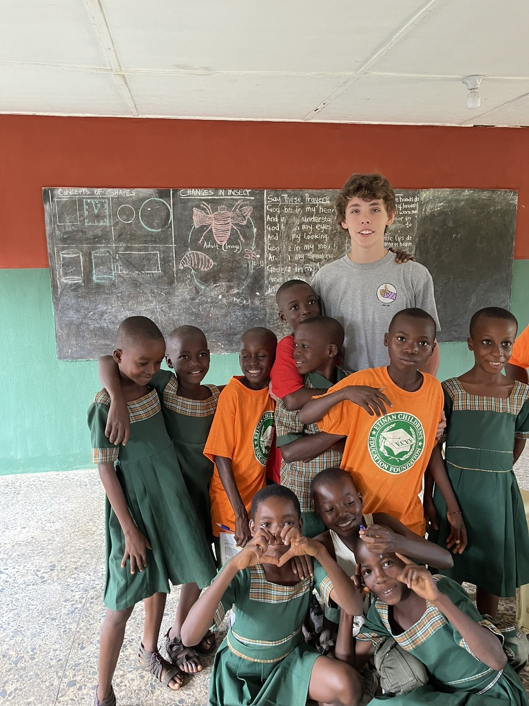

Inside the Classroom

A Day in the Classroom
Every morning started the same way: students filing in, greeting me in English, then switching back to Ibibio the second class wasn’t in session, in a room that got hot fast once the sun came up. We didn’t have much, just a chalkboard, a stack of shared readers, and whatever paper I’d brought with me, but the kids showed up ready to work every single day.
The Lessons
Most days were split between reading, writing, and pronunciation drills. We’d start with a shared reading passage, sound out unfamiliar words together, and then move into writing practice, copying sentences at first and eventually building their own. Pronunciation was its own challenge and its own kind of fun. Certain English sounds don’t exist in Ibibio, so we spent a lot of time on tongue-twisters and repetition, and the kids got a real kick out of correcting each other, and me, when I mispronounced local words back at them.
A Few Moments That Stuck with Me
Ukpono, who could barely read a sentence out loud in week one, stood up in week four and read an entire paragraph to the class without stumbling once. The room cheered for him, and I was never prouder of a student than I was in that moment. Another day, a student asked me why English “doesn’t make any sense,” pointing out that the word “read” is spelled the same in the present and past tense but sounds different. It was a completely fair question, and I genuinely struggled to answer it well.
The Challenges
Teaching with limited resources meant constantly improvising. We didn’t have enough readers for every student, so kids shared, two or three to a book. There was no reliable power, so anything that needed to be written out ahead of time had to be done by hand, in advance, using whatever paper was available. And with one teacher covering 15 students across multiple subjects, one-on-one time was rare and precious. None of that stopped the kids from learning. It just meant progress took more effort, from them and from me, than it should have had to.
Through all of it, they loved coming to school every day.